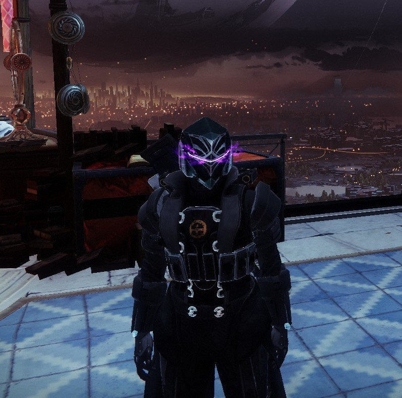
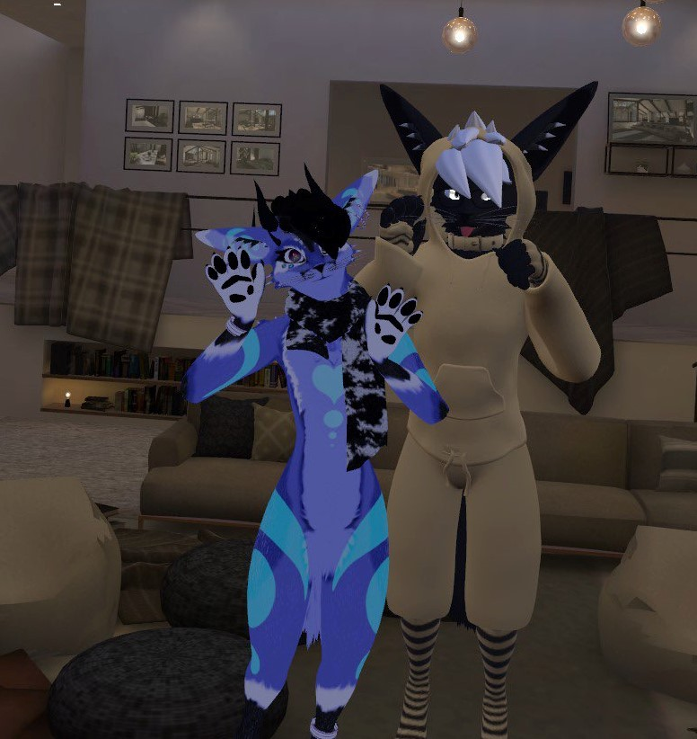

Hobbies
On this page you will find some hobbies that DJ associates with himself.
First, we have the game Destiny 2. This game is an MMO(Massively Multiplayer Online) Action Shooter game. While the game originally came out on August 28, 2017, DJ didn't start playing the game until 2021. Despite this, he has spent countless hours playing through the content. He currently has 4107 hours of gametime at the time of writing with no plans to stop. He spends his time in game searching for equipment and weapons to better his character, while enjoying the raids and missions that the game offers.

Second, there is the Furry community that DJ is a part of. This community is a very nuanced group of people who enjoy various forms of fiction and roleplay. Many of them have avatars of themselves as some form of anthropomorphic animal. It is a very welcoming community that is open to people of any race or gender.
Lastly, DJ is a big fan of reading. This is one of hobbies he does when he has some time but would rather stay off of the computer. Many of the books that he enjoys fall into the fantasy genre. Two of the series that he enjoys within this genre are the Mistborn series and the Warriors Heir series.